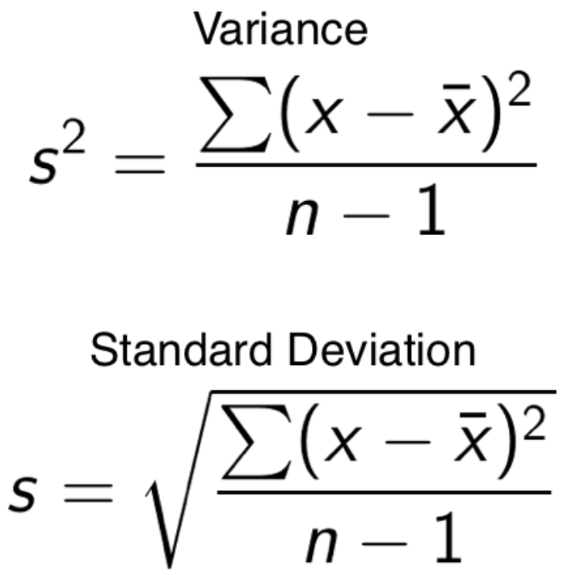

Chapter 4 Statistics and Machine Learning
4.1 Overview of Important Concepts
4.1.1 Probability and Sampling Distributions
Below is a review of conditional probabilities, Bayes’ theorem, and central limit theorem and how to handle questions that work with commonly referenced probability distributions source
4.1.1.1 Conditional Probabilities & Bayes Theorem
In conditional probabilities, we want to figure out the probability of something happening, given that we have some additional information that may influence the outcome.

Figure 4.1: There is an overlap between sets A and B, which represents the intersection of both sets (and the probability of both independent events occurring).
BAYES THEOREM
Bayes theorem is a staple in Data Science interviews. Bayes’ theorem helps us tackle probability questions where we already know about the probability of B given A, but we want to find the probability of A given B.

Above we are solving for A given B by multiplying the independent events in the numerator to get the probability of A and B occurring together. We then divide the by probability of B to get the answer.
Another way to solve these questions is through tree diagrams. Since given a sequence of independent events, you can chain together the singular probabilities to compute the overall probability.
Example 1 :
What is the probability that the applicant passes the stats interview, given that he or she passes the coding interview as well?
- make tree diagram
- multiply the independent events then compute the probability of each outcome
- plug into Bayes theorem

#passes both the stats and coding interviews
both = 0.25 * 0.40
#0.1
#fails stats and passes the coding interview
coding = (0.25 * 0.40) + (0.75 * 0.20)
#0.25
stats_given_coding = both / coding
print(stats_given_coding)## 0.4Therefore, there is a 40% chance of passing the the stats interview, given that they passed the coding interview.
Example 2:
You have two coins in your hand. Out of the two coins, one is a real coin (heads and tails) and the other is a faulty coin with tails on both sides.
You are blindfolded and forced to choose a random coin and then toss it in the air. The coin lands with tails facing upwards. Find the probability that this is the faulty coin.
# (tails)
# P(faulty)
# P(tails and faulty)
# Print P(faulty | tails)
print(3 / 4)## 0.75print(1 / 2)## 0.5print((1 / 2) * 1)## 0.5print((0.5*1)/(0.5*0.5+0.5*1))## 0.6666666666666666
Figure 4.2: tree diagram for faultly coin
4.1.1.2 Central limit theorem
What - Central limit theorem says that with a large enough collection of samples from the same population, the sample means will be normally distributed. Note that this doesn’t make any assumptions about the underlying distribution of the data; with a reasonably large sample of roughly 30 or more, this theorem will always ring true no matter what the population looks like.
Why - Central limit theorem matters because it promises our sampling mean distribution will be normal, therefore we can perform hypothesis tests. More concretely, we can assess the likelihood that a given mean came from a particular distribution and then, based on this, reject or fail to reject our hypothesis. This empowers all of the A/B testing you see in practice.
CLT vs law of large numbers - The law of large numbers states that as the size of a sample is increased, the estimate of the sample mean will more accurately reflect the population mean. This is different from the central limit theorem which is more broadly about normality vs sampling.
law of large numbers example:
from numpy.random import randint
#randint is exclusive for high number (second parameter)
small = randint(1, 7, 10)
small_mean = sum(small) / len(small)
large = randint(1, 7, 1000)
large_mean = sum(large) / len(large)
print(small_mean)## 3.4print(large_mean)## 3.495Notice how the mean of the large sample has gotten closer to the true expected mean value of 3.5 for a rolled die. * CLT example:
from numpy.random import randint
import matplotlib.pyplot as plt
# generating samples
means = [randint(1, 7, 30).mean() for i in range(100)]
plt.hist(means)## (array([ 3., 6., 6., 19., 11., 33., 14., 7., 0., 1.]), array([2.63333333, 2.82666667, 3.02 , 3.21333333, 3.40666667,
## 3.6 , 3.79333333, 3.98666667, 4.18 , 4.37333333,
## 4.56666667]), <a list of 10 Patch objects>)plt.show()
4.1.1.3 Probabilty distributions
Probability distributions are to statistics what data structures are to computer science.
- Simple description - they indicate the likelihood of an outcome.
- Properties
- probabilities must add up to 1
Figure 4.3: Area under the curve (AUC) equals 1.
- probabilities must add up to 1
- Types
- Bernoulli
- Binomial
- Poisson
- Normal(Gaussian)
- Others: Uniform, hypergeometric, log normal, student’s t, chi-squared, gamma, beta, webull, exponential, geometric, negative binomial
4.1.1.3.1 Bernoulli distribution
Bernoulli is a discrete distribution that models the probability of two outcomes (e.g. a coin flip). There only two possible outcomes, and the probability of one is always 1- <the_other>.
#simulating bernoulli data with scipy stats
from scipy.stats import bernoulli
data = bernoulli.rvs(p=0.5, size=1000)
plt.hist(data)## (array([495., 0., 0., 0., 0., 0., 0., 0., 0., 505.]), array([0. , 0.1, 0.2, 0.3, 0.4, 0.5, 0.6, 0.7, 0.8, 0.9, 1. ]), <a list of 10 Patch objects>)plt.show()
When using a small sample size heads and tails don’t have the exact same probability. This is no fluke — when sampling, we won’t always get perfect results. We can increase our accuracy however, when you increase the size of the sample.
4.1.1.3.2 Binomial distribution
The Binomial distribution can be thought of as the sum of the outcomes of multiple Bernoulli trials, meaning those that have an established success and failure. It’s used to model the number of successful outcomes in trials where there is some consistent probability of success.
- Parameters
k- number of successesn- number of trialsp- probability of success
Motivating example: Consider a game where you are trying to make a ball in a basket. You are given 10 shots and you know that you have an 80% chance of making a given shot.
#simulating binomial data with scipy stats
from scipy.stats import binom
data = binom.rvs(n=10, p=0.80, size=1000)
plt.hist(data)## (array([ 1., 1., 26., 0., 70., 205., 0., 304., 296., 97.]), array([ 3. , 3.7, 4.4, 5.1, 5.8, 6.5, 7.2, 7.9, 8.6, 9.3, 10. ]), <a list of 10 Patch objects>)plt.show()# Probability of making 8 or less shots out of 10
prob1 = binom.cdf(k=8, n=10, p=0.8)
# Probability of making 10 out of 10 shots
prob2 = binom.pmf(k=10, n=10, p=0.8)
print(prob1)## 0.6241903616print(prob2)## 0.10737418240000005Remember, interviewers like to start out with fundamental concepts before getting incrementally more complex. Above it started with just showing the general shape of the distribution but went into application.
4.1.1.3.3 Normal (Gaussian) distribution
The normal distribution is a bell-curve shaped continuous probability distribution that is fundamental to many statistical concepts, like sampling and hypothesis testing.
Figure 4.4: 68-95-99.7 rule, aka 68% of observations fall within 1 std, 95% of observations fall within 2 std and so on.
# Generate normal data
from scipy.stats import norm
data = norm.rvs(size=1000)
plt.hist(data)## (array([ 8., 34., 106., 195., 277., 224., 111., 40., 4., 1.]), array([-3.16051949, -2.46657265, -1.77262581, -1.07867896, -0.38473212,
## 0.30921472, 1.00316156, 1.6971084 , 2.39105525, 3.08500209,
## 3.77894893]), <a list of 10 Patch objects>)plt.show()
# Given a standardized normal distribution, what is the probability of an observation greater than 2?
true_prob = 1 - norm.cdf(2)
# Looking at our sample, what is the probability of an observation greater than 2?
sample_prob = sum(obs > 2 for obs in data) / len(data)
print(true_prob)## 0.02275013194817921print(sample_prob)## 0.021Note that the results from the true distribution and sample distribution are different.
4.1.1.3.4 Poisson distribution
The poisson distribution represents a count or the number of times something happened. Unlike the binomial distribution, it’s calculated by an average rate (lambda) instead of a probability p and number of trials n. As the rate of events change the distribution changes as well.
- When to use: use the Poisson when counting events over time given some continuous rate.
- E.g.: In any 15-minute interval, there is a 20% probability that you will see at least one shooting star. What is the probability that you see at least one shooting star in the period of an hour?
4.1.2 Exploratory Data Analysis
4.1.2.1 Descriptive Statistics
There are two most common questions types in interviews along with some other concepts that don’t go in those categories: 1. measures of centrality * Core measures * mean - average (sum / # of observations) * median - middle value when all observations are sorted * mode - most common observation, or peak of the distribution
Figure 4.5: Mean, median and mode.
- Notes:
- Mean, median and mode are all equal if the distribution is perfectly normal
- measures of variability
- Core measures
- variance - how far spread out your data points are from each other.
- standard deviation - how far away your data is from the average.
- range - max - min

Figure 4.6: Formula for variance and standard deviation
import math
import numpy as np
nums = [1, 2, 3, 4, 5]
mean = sum(nums) / len(nums)
# Compute the variance and print the std of the list
variance = sum(pow(x - mean, 2) for x in nums) / len(nums)
std = math.sqrt(variance)
# Compute and print the actual result from numpy
real_std = np.array(nums).std()
print(std)## 1.4142135623730951print(real_std)## 1.4142135623730951- other
- modality - multiple peaks that show in the data (bi-modal = two peaks)
- skewness - the symmetry of the distribution (skewness is determined by where the the tail is)

Figure 4.7: Left skewed data
4.1.2.2 Categorical Data
Types of categorical data: 1. ordinal - takes on order (e.g. 5 star movie reviews) 2. nominal - no order (e.g. gender, or eye color)
Preprocessing categorical variables * unlike continuous data, to use machine learning on categorical data you need to encode it. * Types of encoding 1. Label encoding - simply assigning a number to the text factor of the category 2. One Hot encoding - break every subcategory into its own Boolean column
import pandas as pd
list_of_laptops = [['Lenovo', 'ThinkPad 13', 960.0],
['Apple', 'MacBook Pro', 1518.55],
['Dell', 'XPS 13', 1268.0],
['Lenovo', 'ThinkPad Yoga', 2025.0],
['Lenovo', 'IdeaPad 520S-14IKB', 599.0],
['Dell', 'Precision 5520', 2135.0],
['Dell', 'Inspiron 3552', 379.0],
['Dell', 'Vostro 5568', 912.5],
['Lenovo', 'ThinkPad X1', 2339.0],
['Dell', 'Inspiron 5579', 1049.0]]
laptops = pd.DataFrame(list_of_laptops, columns = ['Company', 'Product', 'Price'])from sklearn import preprocessing
# Encoder - check out new values
encoder = preprocessing.LabelEncoder()
company_column_encoded = encoder.fit_transform(laptops['Company'])
print(company_column_encoded)## [2 0 1 2 2 1 1 1 2 1]# One-hot encode Company for laptops2
laptops2 = pd.get_dummies(data=laptops, columns=['Company'])
print(laptops2.head())## Product Price Company_Apple Company_Dell Company_Lenovo
## 0 ThinkPad 13 960.00 0 0 1
## 1 MacBook Pro 1518.55 1 0 0
## 2 XPS 13 1268.00 0 1 0
## 3 ThinkPad Yoga 2025.00 0 0 1
## 4 IdeaPad 520S-14IKB 599.00 0 0 1Be careful about the high dimensionality of using one-hot-encoding!
import seaborn as sns
from matplotlib import pyplot as plt
sns.countplot(laptops['Company'])
plt.show()
# Visualize the relationship with price
from matplotlib.pyplot import figure
figure(figsize=(3, 3), dpi=80)
laptops.boxplot('Price', 'Company',rot=30)
plt.show()
4.1.2.3 Two or more variables
Overview: Comparing the relationships between two or more numerical variables including correlation, confidence intervals and more.
- correlation - describes the relatedness between variables, meaning how much information variables reveal about each other.

Figure 4.8: Correlation with various scatterplots
- Covariance - the average of the product between the values of each sample where the values have each had their mean subtracted.
- difficult to interpret since don’t get a magnitude, but we can use it to get the Pearsons correlation coefficient
- Pearson’s correlation coefficent - denoted as lowercase
r, is the covariance function divided by the product of the sample standard deviations of each variable.
Figure 4.9: Positive r means there is a positive relationship, and vise versa. 1 (or -1) is perfect, 0 is no corelation.
- R^2 - is simply Pearson’s correlation coefficent squared. Interpreted as the amount of variable Y that is explained by X.
# data import hidden - obviously
import seaborn as sns
from matplotlib import pyplot as plt
sns.pairplot(weather) Some appear more correlated then others.
Some appear more correlated then others.
Lets look at Humidity9am and Humidity3pm closer:
from matplotlib.pyplot import figure
figure(figsize=(3, 3), dpi=80)
plt.scatter(weather['Humidity9am'], weather['Humidity3pm'])
plt.show()
Correlation vs Causation
* Correlation ≠ causation.
* Need experimentation (sufficiency | necessity)
4.1.3 Statistical Experiments and Significance Testing
4.1.3.3 Power and sample size
Components of a power analysis: * effect size (e.g. 20% improvement) * significance level / alpha value * power - probability of detecting an effect * if we see something then we want to have enough power to conclude with high probability that the results are statistically significant. * lowering power = increasing chance of a Type II error.
Figure 4.10: Error types in statistics
from statsmodels.stats.power import zt_ind_solve_power
import statsmodels.stats.proportion as prop
std_effect = prop.proportion_effectsize(0.20, 0.25)
zt_ind_solve_power(effect_size=std_effect, nobs1=None, alpha=0.05, power=0.80)
# 1091.8962 impressions
#increase power to 0.95 -> 800 more observations
std_effect = prop.proportion_effectsize(0.20, 0.25)
zt_ind_solve_power(effect_size=std_effect, nobs1=None, alpha=0.05, power=0.95)
# 1807.76215Tools:
* statsmodel.stats.power
* zt_ind_solve_power()
* tt_ind_solve_power()
* before we use these methods we need to know standarized minimum effect difference - proportion_effectsize() can do this by inputting baseline and desired minimum conversion rates.
* plt_power function in python to visualize
4.2 Sample Questions
4.2.1 Comparison of means
So suppose hypothetically Facebook users share, their height in centimeters and their gender. How would you test the hypothesis that men on average are taller?
t-test could be used to compare the means of two different groups if the sample is larger then 30, but if larger then 30 we can use a z-test.
from statsmodels.stats.weightstats import ztest as ztest
women = [82, 84, 85, 89, 91, 91, 92, 94, 99, 99,
82, 84, 85, 89, 91, 91, 92, 94, 99, 99,
105, 109, 109, 109, 110, 112, 112, 113, 114, 114,
105, 109, 109, 109, 110, 112, 112, 113, 114, 114]
men = [90, 91, 91, 91, 95, 95, 99, 99, 108, 109,
90, 91, 91, 91, 95, 95, 99, 99, 108, 109,
109, 114, 115, 116, 117, 117, 128, 129, 130, 133,
109, 114, 115, 116, 117, 117, 128, 129, 130, 133]
#perform two sample z-test
ztest(women, men, value=0)
#(-1.9953236073282115, 0.046007596761332065)## (-2.8587017261290355, 0.004253785496952403)The test statistic for the two sample z-test is -1.9953 and the corresponding p-value is 0.0460. Since this p-value is less than .05, we have sufficient evidence to reject the null hypothesis. In other words, the mean height of men is significantly different vs women.
import numpy as np
women = [82, 84, 85, 89, 91, 91, 92, 94, 99, 99,
105, 109, 109, 109, 110, 112, 112, 113, 114, 114]
men = [90, 91, 91, 91, 95, 95, 99, 99, 108, 109,
109, 114, 115, 116, 117, 117, 128, 129, 130, 133]
#check for equal variances, we can assume the populations have equal variances if the ratio of the larger sample variance to the smaller sample variance is less than 4:1.
print(np.var(women), np.var(men))## 119.92750000000001 197.06import scipy.stats as stats
#perform two sample t-test with equal variances
stats.ttest_ind(a=women, b=men, equal_var=True)## Ttest_indResult(statistic=-1.9953236073282115, pvalue=0.05321388037191098)Because the p-value of our test (0.5321) is greater than alpha = 0.05, we fail to reject the null hypothesis of the test. We do not have sufficient evidence to say that the mean height of men vs women is different.
4.2.2 Principle of Inclusion/Exclusion
The carshare dilemma * Statistics * Probability Theory
Suppose we have selected a group of people to take a survey. 35% of the group like Uber, 20% like both Lyft and Uber, and 25% like neither Lyft nor Uber.
Given this information, what percentage of the sample likes Lyft?
Hint: You can use basic probability theory to solve this problem.
Figure 4.11: carshare dilema
4.2.3 Bayes Theorem 1
Probability of passing through interview stages * Statistics * Bayes Theorem
Given the information below, if you had a good first interview, what is the probability you will receive a second interview?
- 50% of all people who received a first interview received a second interview
- 95% of people that received a second interview had a good first interview
- 75% of people that did not receive a second interview had a good first interview
Other good source on Bayes Theorem

Figure 4.12: Interview Bayes Theorem
4.2.4 Random ML question 1
How to compare the significance between two confusion matrices?
Figure 4.13: How to find significance between two matricies.
# If go chi square route
two chi-square tests, one for true label = 0 and one for true label = 1. However, I think you should just say your recall/specificity/auc/... was improved some pct.
#https://github.com/sepandhaghighi/pycm
Use PyCm to calculate the confidence interval of these stats. 95% Confidence Interval of Kappa
(0.4934, 0.9291), (0.3687, 0.8612)
95% CI of accuracy
(0.80507,0.97271), (0.7571,0.9466)
Therefore, two matricies are statistically the same